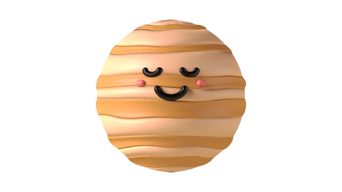

Mercury
Mercury is the smallest planet and the closest to the Sun. It completes an orbit in just 88 Earth days, but its surface gets very hot in sunlight and very cold in darkness.
Type
Rocky planet
Orbit
88 days
Fun Fact
Closest to the Sun